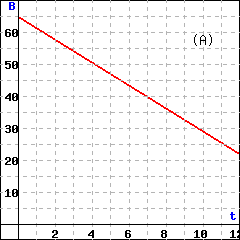
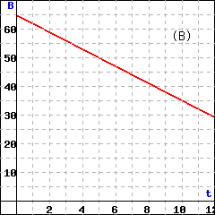
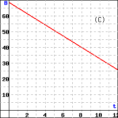
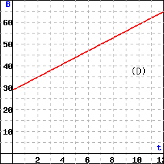

Section 1.5 Equations of Lines
Subsection Polar Ice
Three main factors influence the energy balance of the Earth and its temperature:
The total energy influx from the sun
The chemical composition of the atmosphere
The ability of the Earth's surface to reflect light, or albedo
Because polar ice reflects light from the sun, the radiation balance over an ice-covered ocean is very different from the balance over an open ocean. The ice component of the climate system, called the cryosphere, plays an important role in the Earth's radiation balance.
Climate models predict that global warming over the next few decades will occur mainly in the polar regions. As polar ice begins to melt, less sunlight is reflected into space, which raises the overall temperature and fuels further melting. This process is called ice albedo feedback. Since satellite monitoring began in 1979, Arctic sea ice cover has decreased about 10% per decade, falling to a startling new low in 2007.

Numerous factors influence the freezing point of sea water, including its salinity, or mineral content. In this Lesson we'll develop a formula for the freezing temperature of water in terms of its salinity.
Subsection Slope-Intercept Form
In earlier sections we learned that:
Equation of a Line.
The \(y\)-intercept of a line gives the initial value of \(y\text{.}\)
The slope of the line gives the rate of change of \(y\) with respect to \(x\text{.}\)
Comparing these observations with the form for a linear model, we see that
Usually we write the terms in the opposite order, like this: \(y = mx + b\text{.}\) We call this last equation the slope-intercept form for a line.
Slope-Intercept Form.
We can write the equation of a line in the form
where \(m\) is the slope of the line, and \(b\) is the \(y\)-intercept.
Checkpoint 1.74. QuickCheck 1.
Choose the correct statement about the equation \(y = 8 - 6x\)
The slope is \(8\) and the \(y\)-intercept is \(-6\text{.}\)
The slope is \(-6\) and the \(y\)-intercept is \(8\text{.}\)
The slope is \(-6x\) and the \(y\)-intercept is \(8\text{.}\)
The slope is \(8\) and the \(y\)-intercept is \(6\text{.}\)
Example 1.75.
The graph shows the amount of garbage \(G\text{,}\) in tons, that has been deposited at a dumpsite \(t\) years after new regulations go into effect.
Choose two points on the graph and compute the slope, including units.
Find an equation for the graph shown.
State the meaning of the slope and the vertical intercept.

-
Two points on the line are \((0, 25)\) and \((10, 150)\) The slope is
\begin{gather*} m=\frac{\Delta G}{\Delta t}=\frac{125\text{ tons}}{10\text{ years}}=12.5 \text{ tons/year} \end{gather*} -
The vertical intercept of the graph is \((0,25)\text{,}\) so \(b=25\text{,}\) and
\begin{gather*} G=mt+b = 12.5t + 25 \end{gather*} The slope tells us that garbage is accumulating at a rate of 12.5 tons per year. The vertical intercept tells us that when the new regulations went into effect, the dump held 25 tons of garbage.
Checkpoint 1.76. Practice 1.
Delbert decides to use DSL for his Internet service.Earthlink charges a $99 activation fee and $39.95 per month, DigitalRain charges $50 for activation and $34.95 per month, and FreeAmerica charges $149 for activation and $34.95 per month.

-
Write a formula for Delbert’s Internet costs under each plan. Use \(x\) for the variable.
Earthlink: \(E=\)
DigitalRain: \(D=\)
FreeAmerica: \(F=\)
-
Match Delbert’s Internet cost under each company with its graph shown above.
Line I:
Earthlink
DigitalRain
FreeAmerica
Line II:
Earthlink
DigitalRain
FreeAmerica
Line III:
Earthlink
DigitalRain
FreeAmerica
\(99+39.95x\)
\(50+34.95x\)
\(149+34.95x\)
\(\text{DigitalRain}\)
\(\text{Earthlink}\)
\(\text{FreeAmerica}\)
Earthlink: \(E=99 + 39.95x\text{;}\) DigitalRain: \(D=50 + 34.95x\text{;}\) FreeAmerica: \(F=149 + 34.95x\)
DigitalRain: I; Earthlink: II; FreeAmerica: III
Subsection Coordinate Formula for Slope
Slope measures the change in one variable with respect to unit changes in another.To calculate the net change between two points on a number line, we can subtract their coordinates.
For example, if you walk from \(3^{\text{rd}}\) street to \(8^{\text{th}}\) street, your distance, \(s\text{,}\) from the center of town has increased by 5 blocks, or
If the temperature \(T\) drops from \(28\degree\) to \(22\degree\text{,}\) it has decreased by \(6\degree\text{,}\) or
The net change is positive if the variable increases, and negative if it decreases.
For the graph shown at right, the net change in \(t\)-coordinate from \(P\) to \(Q\) is
We can use the notion of net change to write a coordinate formula for computing slope.

Coordinate Formula for Slope.
If \((x_1, y_1)\) and \((x_2,y_2)\) are two points on a line, then the slope of the line is given by
as long as \(x_1 \ne x_2\)
Note 1.77.
Notice that the numerator of the slope formula, \(y_2 - y_1\text{,}\) gives the net change in \(y\text{,}\) or \(\Delta y\text{,}\) and the denominator, \(x_2 - x_1\text{,}\) gives the net change in \(x\text{,}\) or \(\Delta x\text{.}\) The coordinate formula is equivalent to our definition of slope, \(m=\dfrac{\Delta y}{\Delta x}\text{.}\)
Checkpoint 1.78. QuickCheck 2.
In the coordinate formula for slope, why do we require that \(x_1 \ne x_2\text{?}\)
A) The slope cannot be zero.
B) The two points cannot be the same.
C) The denominator of a fraction cannot be zero.
D) The denominator must equal 1.
Example 1.79.
The graph shows wine consumption, \(W\text{,}\) in the US, in millions of cases, starting in 1990. In 1993, Americans drank 188.6 million cases of wine.
Find the slope of the graph from 1993 to 2003.
-
State the slope as a rate of change. What does the slope tell us about this problem?

-
If \(t = 0\) in 1990, then in 1993, \(t = 3\text{,}\) and in 2003, \(t = 13 \text{.}\) Thus, the points \(P(3, 188.6)\) and \(Q(13, 258.3)\) lie on the line. We want to compute the slope,
\begin{gather*} m=\frac{\Delta W}{\Delta t}=\frac{W_2-W_1}{t_2 - t_1} \end{gather*}between these two points. Think of moving from \(P\) to \(Q\) in two steps, first moving horizontally to the right from \(P\) to the point \(R\text{,}\) and then vertically from \(R\) to \(Q\text{.}\) The coordinates of \(R\) are \((13, 188.6)\text{.}\) (Do you see why?) Then
\begin{align*} \Delta t \amp= t_2-t_1 = 13-3=10\\ \Delta W \amp= W_2-W_1= 258.3-188.6=69.7 \end{align*}and thus
\begin{gather*} m=\frac{W_2-W_1}{t_2-t_1}=\frac{258.3 - 188.6}{13 - 3}=6.97 \end{gather*} -
The slope gives us a rate of change, and the units of the variables help us interpret the slope in context.
\begin{gather*} \frac{\Delta W}{\Delta t} = \frac{258.3 - 188.6 \text{ millions of cases}}{13-3 \text{ years}}= 6.97 \text{ millions of cases/year} \end{gather*}Over the ten years between 1993 and 2003, wine consumption in the US increased at a rate of 6.97 million cases per year.
Checkpoint 1.80. Practice 2.
In 1991, there were 64.6 burglaries per 1000 households in the United States. The number of burglaries reported annually declined at a roughly constant rate over the next decade, and in 2001 there were 28.7 burglaries per 1000 households. (Source: U.S. Department of Justice)
-
Sketch a line that goes through the two points \((t, B)\) given in the problem, where \(t = 0\) in 1990.
Choose the correct graph.
(A)
(B)
(C)
(D)
-
Find the slope of the line, including units.
\(m\) is
burglaries per decade
burglaries per 1000 households per year
households per burglary per year
burglaries per year
What does the slope tell us about this problem?
The burglary rate declined by 3.59 burglaries per decade
The burglary rate declined by 3.59 burglaries per 1000 households every year
The burglary rate declined by 3.59 burglaries per year
(in the years 1991 to 2001).
\(\text{(C)}\)
\(-3.59\)
\(\text{burglaries per 1000 households per year}\)
\(\text{The burglary ... every year}\)
Because \(t=0\) corresponds to 1990, we have the two points \((1,64.6)\) and \((11,28.7)\text{.}\) The line joining those two points corresponds to the line with equation \(y = {68.19-3.59t}\)
We use the two points \((1,64.6)\) and \((11,28.7)\) to compute the slope: \(-3.59\) burglaries per 1000 households per year. From 1991 to 2001, the burglary rate declined by 3.59 burglaries per 1000 households every year.
Subsection Point-Slope Formula
Now consider using the slope formula for a different problem. If we know the slope of a line and the coordinates of one point on the line, we can use the coordinate formula for slope to find the \(y\)-coordinate of any other point on the line.
Instead of evaluating the formula to find \(m\text{,}\) we substitute the values we know for \(m\) and \((x_1, y_1)\text{.}\) If we then plug in the \(x\)-coordinate of any unknown point, we can solve for \(y\text{.}\)
Checkpoint 1.81. QuickCheck 3.
A line has slope \(\dfrac{-3}{4}\) and passes through the point \((1,-4) \text{.}\) Which equation can you use to find the \(y\)-coordinate of the point on the line with the \(x\)-coordinate of 6?
\(\displaystyle \dfrac{-3}{4}=\dfrac{1-6}{y+4} \)
\(\displaystyle \dfrac{-3}{4}=\dfrac{y+4}{1-6} \)
\(\displaystyle \dfrac{-3}{4}=\dfrac{y-6}{-4-1} \)
\(\displaystyle \dfrac{-3}{4}=\dfrac{y+4}{6-1} \)
Remember that the equation for a line is really just a formula that gives the \(y\)-coordinate of any point on the line in terms of its \(x\)-coordinate. So, if we know the slope of a particular line and one point on the line, we can use the coordinate formula for slope to find its equation.
Example 1.82.
Graph the line that passes through the point \((1,-4)\) and has \(\text{slope}=\dfrac{-3}{4} \text{.}\)
Find an equation for the line in part (a).
We first plot the given point, \((1,-4)\text{,}\) and then use the slope to find another point on the line. The slope is \(m=\dfrac{-3}{4}=\dfrac{\Delta y}{\Delta x} \text{,}\) so starting from \((1,-4)\) we move down 3 units and then 4 units to the right. This brings us to the point \((5,-7)\text{.}\) We draw the line through these two points.

-
To find an equation for the line, we start with the slope formula,
\begin{gather*} m=\frac{y_2 -y_1}{x_2 - x_1} \end{gather*}We substitute \(\dfrac{-3}{4} \) for the slope, \(m\text{,}\) and \((1,-4)\) for \((x_1,y_1)\text{.}\) For the second point, \((x_2,y_2)\text{,}\) we substitute the variable point \((x,y) \) to obtain
\begin{gather*} m=\frac{y + 4}{x-1} \end{gather*}This is an equation for the line, but if we want to solve for \(y\text{,}\) we first multiply both sides by \(x − 1\text{.}\)
\begin{align*} \alert{(x-1)}\frac{-3}{4}\amp = \frac{y+4}{x-1}\alert{(x-1)} \\ \frac{-3}{4}(x-1)\amp = y+4 \amp\amp \blert{\text{Apply the distributive law.}} \\ \frac{-3}{4}x +\frac{3}{4} \amp = y+4 \amp\amp \blert{\text{Subtract 4 from both sides.}} \\ \frac{-3}{4}x -\frac{13}{4} \amp = y \amp\amp \blert{\frac{3}{4}-4=\frac{3}{4}-\frac{16}{4}=\frac{-13}{4}} \end{align*}
When we use the slope formula to find the equation of a line, we substitute a variable point \((x, y)\) for the second point. This version of the formula,
is called the point-slope form for a linear equation. It is sometimes stated in another version by clearing the fraction to get
Point-Slope Form.
The equation of the line that passes through the point \((x_1, y_1)\) and has slope \(m\) is
You may also see the formula written in an alternate version:
Checkpoint 1.83. Practice 3.
Subsection Finding a Linear Model
Now we are ready to find the equation promised in the introduction to this section: a formula for the freezing temperature of water in terms of its salinity.
When we have two data points for a linear model, we can find its equation using two steps: first we compute the slope of the line, then we use the point-slope formula.
Example 1.84.
Sea water does not freeze at exactly 32\(\degree\)F because of its salinity.The temperature at which water freezes depends on its dissolved mineral content. A common unit for measuring salinity is parts per thousand, or ppt. For example, salinity of 8 ppt means 8 grams of dissolved salts in each kilogram of water. Here are some data for the freezing temperature of water.
| Salinity (ppt), \(S\) | \(8\) | \(12\) | \(20\) |
| Freezing temperature (\(\degree\)F), \(T\) | \(31.552\) | \(31.328\) | \(30.88\) |
Do these data points describe a linear model? Why or why not?
-
Find a linear equation for freezing temperature, \(T\text{,}\) in terms of salinity, \(S\text{.}\)
Step 1: Find the slope.
Step 2: Use the point-slope formula.
What is the salinity of water that freezes at 32\(\degree\)F?
Sea water has an average salinity of 35 ppt. What is the freezing point of sea water?
-
We check to see if the slope between each pair of points is the same.
\begin{align*} m \amp = \dfrac{T_2-T_1}{S_2-S_1} = \dfrac{31.328-31.552}{12-8} = -0.056\\ m \amp = \dfrac{T_3-T_2}{S_3-S_2} = \dfrac{30.88 - 31.328}{20-12} = -0.056 \end{align*}Because the slopes are the same, the data could describe a linear model.
-
Step 1: In part (a) we found the slope: \(m = -0.056\)
Step 2: We substitute the slope and either point into the point-slope formula.
\begin{align*} T-T_1 \amp = m(S-S_1)\\ T-30.88 \amp = -0.056(S-20)\\ T-30.88 \amp = -0.056S + 1.12\\ T \amp = -0.056S + 32 \end{align*} If \(T=32\) in our equation, then \(S\) must be zero, so pure water (no salinity) freezes at 32\(\degree\)F.
We substitute 35 for \(S\) in our equation.
\begin{equation*} T = -0.056(35)+32 = 30.04 \end{equation*}Sea water freezes at 30.04\(\degree\)F.
Checkpoint 1.85. Practice 4.
The fee for registering a new car is given by a linear equation that depends on the car’s value. The fee for a $15,000 car is $128.50, and the fee for a $25,000 car is $193.50.
-
Find a linear equation that gives the registration fee \(F\) for a new car that cost \(V\) dollars.
Answer:
-
Use your equation to estimate the registration fee for a car that costs $22,000.
$
-
What is the slope of your line? What does the slope mean in this situation?
The slope is and it tells
the steepness of the car's value.
the fraction of the car's value that is added into the registration fee.
the intest rate of the loan.
how much the car's value decreases.
Subsection Summary
In this section, we studied three different formulas associated with linear equations: the slope-intercept formula, the coordinate formula for slope, and the point-slope formula. How are these formulas related, and how are they different?
-
The slope-intercept form, \(y = mx + b\text{,}\) is just a special case of the point-slope formula. If the given point \((x_1, y_1)\) happens to be the \(y\)-intercept \((0, b)\text{,}\) then the point-slope formula reduces to the familiar form:
\begin{align*} y\amp =y_1+m(x-x_1) \amp\amp\blert{\text{Substitute } b \text{ for } y_1 \text{ and 0 for } x_1.}\\ y\amp = b + m(x-0) \amp\amp \blert{\text{Simplify.}}\\ y\amp = mx + b \end{align*}We can use the (shorter) slope-intercept form if we are lucky enough to know the \(y\)-intercept of the line.
-
What is the difference between the slope formula
\begin{gather*} m= \frac{y_2-y_1}{x_2-x_1} \end{gather*}and the point-slope formula
\begin{gather*} m= \frac{y-y_1}{x-x_1} ? \end{gather*}They are really the same formula, but they are used for different purposes:
The slope formula is used to calculate the slope when we know two points. We know \((x_1, y_1)\) and \((x_2, y_2)\text{,}\) and we are looking for \(m\text{.}\)
The point-slope formula is used to find the equation of a line. We know \((x_1, y_1)\) and \(m\text{,}\) and we are looking for \(y = mx + b\text{.}\)
Exercises Problem Set 1.5
Warm Up
Exercise Group.
For Problems 1 and 2, complete the table of values and graph the line, then answer the questions below.
1.
\(y=8-2x \vphantom{\dfrac{1}{2}}\)
| \(x\) | \(-1\) | \(~0~\) | \(~2~\) | \(~3~\) | \(~4~\) |
| \(y\) | \(\) | \(\) | \(\) | \(\) | \(\) |
2.
\(y=2+\dfrac{1}{2}x \)
| \(x\) | \(-2\) | \(~0~\) | \(~1~\) | \(~3~\) | \(~5~\) |
| \(y\) | \(\) | \(\) | \(\) | \(\) | \(\) |
-
What is the initial value for each line; that is, what is the \(y\)-value when \(x = 0\text{?}\)
Line 1:
Line 2:
-
Look at the table for each line. How much does \(y\) increase or decrease for each 1-unit increase in \(x\text{?}\) What is this value called?
Line 1:
Line 2:
Compare your answers to parts (a) and (b) with the equation for each line. What do you observe?
Exercise Group.
For Problems 3 and 4, calculate the net change in coordinate from \(P\) to \(Q\text{.}\)
3.


4.


Skills Practice
Exercise Group.
For Problems 5–8,
Write the equation in slope-intercept form.
State the slope and the \(y\)-intercept of its graph.
5.
\(3x+2y=1\)
6.
\(2x- \dfrac{3}{2}y=3\)
7.
\(4.2-0.3y=6.6\)
8.
\(5x-4y=0\)
Exercise Group.
For Problems 9 and 10,
Sketch the graph of the line with the given slope and \(y\)-intercept.
Write an equation for the line.
Find the \(x\)-intercept of the line.
9.
\(m=\dfrac{-5}{3}\) and \(b=-6\)
10.
\(m=\dfrac{3}{4}\) and \(b=-2\)
Exercise Group.
In Problems 11 and 12, choose the correct graph for each equation. The scales on both axes are the same.
11.
\(\displaystyle y = \dfrac{3}{4}x + 2\)
\(\displaystyle y = \dfrac{-3}{4}x + 2\)
\(\displaystyle y = \dfrac{3}{4}x - 2 \)
\(\displaystyle y =\dfrac{-3}{4}x - 2\)

12.
\(m\lt 0\text{,}\) \(b\gt 0\)
\(m\gt 1\text{,}\) \(b\lt 0\)
\(0\lt m\lt 1\text{,}\) \(b\lt 0\)
\(m\lt -1\text{,}\) \(b\lt 0 \)

Exercise Group.
For Problems 13 and 14,
Graph the line that passes through the given point and has the given slope.
Write an equation for the line in point-slope form.
Put your equation from part (b) into slope-intercept form.
13.
\((2,-5) \text{;}\) \(m=-3\)
14.
\((2,-1) \text{;}\) \(m=\dfrac{5}{3} \)
Exercise Group.
For Problems 15 and 16, find an equation for the line that goes through the given points. Put your equation into slope-intercept form.
15.
\((-16,-24) \text{,}\) \((8,72) \)
16.
\((-5, 65) \text{,}\) \((20,-145) \)
Exercise Group.
In Problems 17 and 18, choose the correct graph for each equation. The scales on both axes are the same.
17.
\(\displaystyle y = 1 + 2(x+3) \)
\(\displaystyle y = -1 + 2(x-3)\)
\(\displaystyle y = -1 + 2(x+3) \)
\(\displaystyle y = 1 + 2(x-3) \)

18.
\(\displaystyle y = 2 - \dfrac{2}{3}(x - 3) \)
\(\displaystyle y = 2 - \dfrac{3}{2}(x + 3) \)
\(\displaystyle y = 2 + \dfrac{3}{2}(x - 3) \)
\(\displaystyle y = 2 + \dfrac{2}{3}(x + 3) \)

Applications
Exercise Group.
In Problems 19 and 20,
Find a formula for the function whose graph is shown.
Say what the slope and the vertical intercept tell us about the problem.
19.
The graph shows the amount of money, \(M\) (in dollars), in Tammy’s bank account \(w\) weeks after she loses all sources of income.

20.
The graph shows the distance, \(d\) (in meters), traveled by a train \(t\) seconds after it passes an observer.

21.
The boiling point of water changes with altitude and is approximated by the formula
where \(B\) is in degrees and \(h\) is in feet. State the slope and vertical intercept of the graph, including units, and explain their meaning in this context.
22.
The height of a woman in centimeters is related to the length of her femur (in centimeters) by the formula
State the slope and the vertical intercept of the graph, including units, and explain their meaning in this context.
Exercise Group.
In Problems 23–26, we find a linear model from two data points.
Make a table showing the coordinates of two data points for the model. (Which variable should be plotted on the horizontal axis?)
Find a linear equation relating the variables.
State the slope of the line, including units, and explain its meaning in the context of the problem.
23.
Flying lessons cost $645 for an 8-hour course and $1425 for a 20-hour course. Both prices include a fixed insurance fee.
Write an equation for the cost, \(C\text{,}\) of flying lessons in terms of the length, \(h\text{,}\) of the course in hours. Hint: Find two points \((h, C)\) given in the problem. Find the equation of the line through those points.
Explain the meaning of the slope and the vertical intercept.
24.
On an international flight, a passenger may check two bags each weighing \(70\) kilograms, or \(154\) pounds, and one carry-on bag weighing \(50\) kilograms, or \(110\) pounds. Express the weight, \(p\text{,}\) of a bag in pounds in terms of its weight, \(k\text{,}\) in kilograms.
25.
A radio station in Detroit, Michigan, reports the high and low temperatures in the Detroit/Windsor area as \(59\degree\)F and \(23\degree\)F, respectively. A station in Windsor, Ontario, reports the same temperatures as \(15\degree\)C and \(-5\degree\)C. Express the Fahrenheit temperature, \(F\text{,}\) in terms of the Celsius temperature, \(C\text{.}\)
26.
Ms. Randolph bought a used car in 2010. In 2012, the car was worth $9000, and in 2015 it was valued at $4500. Express the value, \(V\text{,}\) of Ms. Randolph's car in terms of the number of years, \(t\text{,}\) she has owned it.
27.
If the temperature on the ground is \(70\degree\) Fahrenheit, the formula
gives the temperature at an altitude of \(h\) feet.
What is the temperature at an altitude of 4100 feet?
At what altitude is the temperature \(34\degree\) Fahrenheit?
Choose appropriate WINDOW settings and graph the equation \(y = 70-\dfrac{3}{820}x\text{.}\)
Find the slope and explain its meaning for this problem.
Find the intercepts and explain their meanings for this problem.
28.
European shoe sizes are scaled differently than American shoe sizes. The table shows the European equivalents for various American shoe sizes.
| American shoe size | 5.5 | 6.5 | 7.5 | 8.5 |
| Europoean shoe size | 37 | 38 | 39 | 40 |
-
Use the grid below to plot the data and draw a line through the data points.

Calculate the slope of your line. Estimate the \(y\)-intercept from the graph.
Find an equation that gives the European shoe size, \(E\text{,}\) in terms of the American shoe size, \(A\text{.}\)
29.
The table shows the amount of ammonium chloride salt, in grams, that can be dissolved in 100 grams of water at different temperatures.
| Temperature (\(\degree \text{C}\)) | 10 | 12 | 15 | 21 | 25 | 40 | 52 |
| Salt (grams) | 33 | 34 | 35.5 | 38.5 | 40.5 | 48 | 54 |
-
Use the grid below to plot the data and draw a straight line through the points. Estimate the \(y\)-intercept of your graph.

Calculate the slope of the line.
Use the point-slope formula to find an equation for the line.
At what temperature will 46 grams of salt dissolve?
30.
A spring is suspended from the ceiling. The table shows the length of the spring in centimeters as it is stretched by hanging various weights from it.
| Weight, kg | \(3\) | \(4\) | \(8\) | \(10\) | \(12\) | \(15\) | \(22\) |
| Length, cm | \(25.76\) | \(25.88\) | \(26.36\) | \(26.6\) | \(26.84\) | \(27.2\) | \(28.04\) |
-
Plot the data on graph paper and draw a straight line through the points. Estimate the \(y\)-intercept of your graph.

Find an equation for the line.
If the spring is stretched to \(27.56\) cm, how heavy is the attached weight?